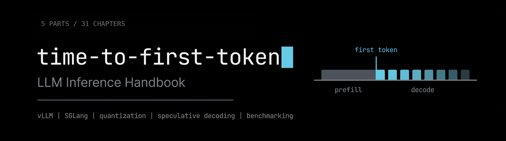

边做边学 LLM 推理服务：交付一个真实的推理服务
一份 10 周、每天 30 分钟的路线图，给想真正跑起 LLM 推理、而不只是读一读的工程师。另有 2 处可选加深（第 8 周（续）大规模集群 PD 优化、第 11 周 TensorRT-LLM），不计入 10 周主线。
一共 50 节课。每一节都服务于同一个产物：一个 OpenAI 兼容的推理服务——你把它部署到租来的 GPU 上，做埋点、压测到 1000+ 并发，用量化和投机解码优化，在前面放一个成本感知的路由器，最后把它作为一份可复现的 benchmark 发表出来。
另一种做法是做十七个互不相干的小实验，大部分时间都花在搭环境上。一个不断长大的服务能覆盖同样的知识点，最后你手里还留下一个能拿得出手的东西。
本 fork 的改进（相对上游 patchy631/time-to-first-token）
- 中文版：主 README 翻译成中文，课程结构、做/读/略读标记、时间投入和 GPU 成本说明全部保留；英文原文保存在 docs/original-README.md。
- 模块地图：本计划扩展为 M0–M4 五个模块，见 docs/MODULES.md。M1 就是下面这份 10 周路线图；M0 是前置的基础与度量，M2 是算子优化，M3 是国产芯片适配，M4 是跨芯片综合项目。
- 算子与国产芯片：新增 M2 算子优化与 M3 国产芯片适配的完整课程（各 6 周），补上原路线图没有的两条线：自己写 kernel 并接进推理引擎、国产品牌芯片上跑通同一模型。
- 第 8 周加深：新增第 8 周（续）：大规模集群 PD 优化——Mooncake 的 KV 中心架构、跨节点 KV 池、KV 传输账、池配比与容错。论文一律作选读，核心内容写进正文。
- TensorRT-LLM 深入周：第 11 周是可选的一周，讲编译式推理引擎 TensorRT-LLM 的架构、部署、量化、投机解码与解耦式服务，最后产出一份三引擎（vLLM / SGLang / TensorRT-LLM）对比报告。这一周引用的论文一律标为选读，正文直接给出深度总结。
- 论文变选读：每篇论文的核心思想、核心逻辑、关键机制和关键数字都已在正文对应章节写成详细总结，读完全文是可选的加深步骤；第 10 周养成阅读习惯的部分仍按原设计直接读论文。
- 原项目授权与出处不变：本仓库沿用上游的 CC BY 4.0 协议，原作者与原仓库链接见文末。
适合谁
你应该熟悉 Python、了解 Transformer 的架构、会用命令行。不需要有 serving、Kubernetes 或 CUDA 的经验。
如果你已经了解某个主题，标记为略读的课可以压缩。做的课不要压缩，它们才是重点。
学完之后你将得到什么
- 一套你自己配置、埋点、调优过的推理服务
- Grafana 看板，展示 TTFT（首 token 延迟）、token 间延迟、吞吐、排队深度和每次请求的成本
- 一个压测工具，能稳定地打出 1000+ 并发
- FP16、FP8、INT4、投机解码、KV 淘汰等多个变体的 benchmark 数据
- 一个按成本、延迟、质量选后端、带每请求 token 预算的路由器
- 一份发表出来的 benchmark 写作，版本固定、命令可复现
- （可选第 8 周（续））一张大规模集群 PD 架构图、KV 传输账表与“信号→动作→验证方法”策略表
- （可选第 11 周）一份三引擎对比报告：同一硬件、同一模型、同一负载下 vLLM、SGLang、TensorRT-LLM 的 TTFT 与吞吐对比，外加选型指南
时间投入
| 每节课时长 | 30 分钟 |
| 每周节数 | 5 节，另有 2 天缓冲 |
| 总计 | 10 周，50 节，25 小时（核心）；另有第 8 周（续）5 节、第 11 周 5 节可选加深 |
| GPU 成本 | 大约一块 24GB 显卡按半小时租用，另加两次 H100 |
缓冲日是用来补课的，不是用来加新内容的。周二缺了一节，不至于让整个计划垮掉。
路线图为什么是这个顺序
这个顺序是刻意排的，和大多数人写清单的方式不一样。背后有五个决定。
Roofline 模型放在最前面。 后面每一次优化，都是同一张图上的一个移动。量化打的是解码阶段受显存带宽限制的问题；连续批处理把算术强度往计算上限推；投机解码用便宜的 FLOPs（在显存带宽受限的情况下 FLOPs 是便宜的）换更少的顺序访存；解耦式部署（disaggregation）存在，是因为 prefill 受计算限制、解码受带宽限制，两者在一块 GPU 上打架。没有这个模型，后面就是一袋子技巧。
度量先于优化。 埋点在第 3 周，压测在第 5 周，远在调优旋钮之前。没有它们，后面的一切都无法验证；一份公开的 benchmark，大部分就是一个可信的度量工具加一个模型。
PagedAttention 和连续批处理不值得自己重写。 vLLM 已经实现了这两者，分块 prefill（chunked prefill）是 vLLM 和 SGLang 默认的调度策略。重写它们，不如读懂 block manager 和调度器，直到你能从代码讲清楚：为什么显存浪费能降到 4% 以下，为什么 GPU 在请求之间不再空转。
路由器放在单位经济学旁边。 一个按成本、延迟、质量选后端的路由器，是唯一一个把“多少钱”和“延迟预算”写进代码的组件。同一周学经济学，读到的东西会变成路由策略，而不是一篇你点头同意的博客。
端侧部署是可选的，放在最后。 ONNX Runtime、WebLLM 是客户端和嵌入式运行时，和前面九周搭建的数据中心那套几乎没有共同的操作面。TensorRT-LLM 不属于这一类：它是一台数据中心推理引擎，只是走编译式路线，所以单独放进可选的第 11 周，而不是和端侧工具并列。
环境准备
GPU
7–8B 的模型大约需要一块 24GB 显卡。按半小时租，用完关机。
| 服务商 | 适合 |
|---|---|
| RunPod | 按秒计费，开机器快 |
| Modal | Serverless，最适合跑 benchmark 扫描脚本 |
| Lambda / vast.ai | 按需和市场价 GPU，便宜 |
| Colab | 纯 Python 的课，不用部署服务 |
第 1 周全部、第 3 周大部分、第 6 周的讲座日、第 9 周全部阅读都不需要 GPU。把租卡集中在动手的那几天。只有两节课必须用 H100：第 5 周的 1000 并发测试，以及第 8 周如果你真的要跑解耦式部署。第 8 周（续）的多节点实测需要多卡集群，租不到就只做部署验证、性能对比待补测。
需要安装的工具
pip install vllm
pip install guidellm
pip install sglang
另外还需要 Docker（跑 Prometheus 和 Grafana），以及第 8 周用的 kind 或一个小的托管集群。
第 11 周另外需要 TensorRT-LLM：优先用 NGC 预编译容器（nvcr.io/nvidia/tensorrt-llm/release:<版本>，以安装指南里的版本标签为准），或按同一指南用 pip 安装。装之前先核对支持的硬件：文档列出的最老架构是 Ampere A100，FP8 权重需要 Hopper 或更新。
路线图
图例：读表示这节课是输入背景知识，做表示这节课要产出东西。略读表示相关概念你可能已经知道，价值在动手部分。论文标记为选读：正文对应章节已有详细总结，读原文是可选的加深步骤。
第 1 周：心智模型
重点。 装上后面一切都挂在上面的那个模型。Roofline、算术强度，以及为什么解码等显存、prefill 等计算。
形式。 以视频为主。Roofline 的推导配上现场画图和示意图更容易理解。
产出。 手算出你要服务的那个模型的算术强度，并且能说清哪个阶段受带宽限制、为什么。
| 天 | 课程 |
|---|---|
| 周一 | 读 · Making Deep Learning Go Brrrr From First Principles（Horace He），前半部分：计算、显存带宽、开销三种区间。 |
| 周二 | 读 · 读完这篇文章。算子融合、开销，以及为什么给一个受显存带宽限制的 kernel 加 FLOPs 没有用。 |
| 周三 | 读 · Stanford CS336 第 5 讲：GPUs（Percy Liang、Tatsunori Hashimoto），前 30 分钟：执行模型与显存层级。讲义。 |
| 周四 | 读 · CS336 第 5 讲后 30 分钟：算术强度、Roofline、为什么数据搬运占主导。文字版：Transformer Inference Arithmetic（kipply）。 |
| 周五 | 做，略读 · 手算目标模型的算术强度。价值在于你自己算出这个数，而不是再读一遍解释。 |
| 缓冲 | CS336 第 10 讲：Inference，然后读 Databricks 那篇开头 prefill 与 decode 的部分。 |
第 2 周：vLLM——先部署，再读内部实现
重点。 先把服务跑起来，然后钻进 block manager 和调度器，直到 paging 的设计从代码里看出来是显然的。
形式。 PagedAttention 以文字为主，论文比视频更精确；V1 架构以视频为主。
产出。 一个跑着 7–8B 模型的 OpenAI 兼容接口，加上你自己写的、从源码讲清 PagedAttention 和 V1 调度器的笔记。
| 天 | 课程 |
|---|---|
| 周一 | 读，略读 · PagedAttention 发布文章。以前的系统在 KV 显存碎片和过度预留上浪费 60–80%，固定大小的 block 把浪费压到 4% 以下。然后（选读）SOSP 论文的 block table 部分，核心内容见下方总结。 |
| 周二 | 做 · 用 vLLM 的 OpenAI 兼容服务跑起 Llama-3.1-8B-Instruct 或 Qwen2.5-7B。把启动命令存下来，十周都要复用。Modal 示例。 |
| 周三 | 读 · vLLM Office Hours 22：Intro to vLLM V1（Michael Goin，Red Hat）。文字版：vLLM V1 架构。 |
| 周四 | 读 · Inside vLLM: Anatomy of a High-Throughput Inference System，调度器与 block manager 部分。 |
| 周五 | 做 · 跟着 这个仓库里的 block table 代码走一遍。写三句话，讲清一个请求的 block 是怎么被查到的。写不出来就再读一遍。 |
| 缓冲 | 对照代码重读 V1 博客的调度器部分，记下博客做了哪些简化。 |
论文精读（原文均为选读）
PagedAttention / vLLM（SOSP 2023）——问题：解码时每个请求的 KV 缓存又大（LLaMA-13B 单个序列可达 1.7GB）又随序列长度动态伸缩，旧系统因碎片和过度预留浪费 60–80% 的显存，批大小上不去。核心思想：借用操作系统的虚拟内存与分页——block 是页、token 是字节、序列是进程；每个序列的 KV 缓存切成固定大小的 block，逻辑 block 通过 block table 映射到不连续的物理 block，并按需分配。关键机制：浪费只发生在序列的最后一个 block，实测浪费不到 4%；block table 加引用计数与写时复制（copy-on-write）让不同序列共享物理 block，并行采样、beam search 这类多输出采样的显存开销最多降 55%、吞吐最多升 2.2 倍。关键数字：论文称同等延迟下 vLLM 比 FasterTransformer 和 Orca 吞吐高 2–4 倍，序列越长、模型越大、解码算法越复杂优势越明显；发布文章称比 HF Transformers 高 24 倍、比 TGI 高 3.5 倍。为什么重要：它是整个计划的地基——KV 缓存分页加连续批处理是 vLLM 与 SGLang 的默认配置，读懂 block table 才能理解调度器为什么能把批做大。原文选读：arXiv:2309.06180。
第 3 周：度量基础设施
重点。 先造出“看”的工具，再做优化。这一周之后的所有内容，都是因为这一周才看得清楚。
形式。 以文字为主。关于 benchmark 方法论的文字，比现有的任何视频都强。
产出。 一个实时 Grafana 看板，在你自己的服务上展示 TTFT、token 间延迟、吞吐和排队深度。
| 天 | 课程 |
|---|---|
| 周一 | 读 · vLLM 指标设计文档。弄清 num_requests_running、num_requests_waiting 和延迟直方图到底在量什么。 |
| 周二 | 做 · 按 Prometheus 和 Grafana 监控文档把监控搭在你的服务上。 |
| 周三 | 做 · 导入看板 JSON，确认在少量负载下面板真的在动。抓取配置现在就修好，别等第 5 周 1000 并发的时候再修。 |
| 周四 | 读 · Databricks 性能工程和 NVIDIA benchmarking 基础。把它们定义的每个指标对应到一个面板上。没有定义的面板删掉。 |
| 周五 | 读 · How to Benchmark LLM Engines（Modal）。为什么要扫请求速率而不是只测一个点，为什么饱和点要丢掉。 |
| 缓冲 | 可选：vLLM Office Hours 21：Production Stack Deep Dive，看已部署场景下的可观测性。 |
第 4 周：SGLang、RadixAttention 与批处理内部
重点。 通过对比学设计空间：固定 block 分页 vs 树形前缀复用。
形式。 混合。RadixAttention 的讲解来自项目负责人。分块 prefill 只有文字资料。
产出。 同一个服务的 SGLang 版本，以及第一份与 vLLM 的前缀复用对比。
| 天 | 课程 |
|---|---|
| 周一 | 读 · RadixAttention and SGLang。在前缀很重的负载上吞吐最高可达 5 倍，没有缓存命中时也没有明显开销，这就告诉你它赢在哪些负载上。 |
| 周二 | 做 · 用 SGLang部署和第 2 周相同的模型。同一硬件、同一 prompt，唯一的变量是引擎。 |
| 周三 | 读 · Efficient LLM Inference with SGLang（Lianmin Zheng，SGLang 负责人）。论文（选读）：SGLang，NeurIPS 2024，核心内容见下方总结。 |
| 周四 | 读，略读 · Continuous batching（Anyscale），然后（选读）Orca，OSDI 2022，核心内容见下方总结。重点是迭代级调度和重尾长度假设——正是它让那些数字成立。 |
| 周五 | 读 · （选读）Sarathi-Serve，关于分块 prefill 和无停顿调度，核心内容见下方总结。这就是分块 prefill 成为两个引擎默认策略的原因。 |
| 缓冲 | SGLang v0.4 零开销调度器，然后用一个共享 system prompt 的负载同时跑两个引擎，看 TTFT 的差距。 |
论文精读（原文均为选读）
SGLang（NeurIPS 2024）——问题：复杂 LLM 程序（多轮调用、控制流、结构化输入输出）缺少高效的编程与执行系统。核心思想：前端语言与后端运行时协同设计。前端是内嵌于 Python 的 DSL（fork 并行分支、gen 生成、choices 约束、run 执行，可解释执行或编译成数据流图）；后端是 RadixAttention 与压缩有限状态机（结构化输出解码加速）。关键机制：RadixAttention 把 prompt 与生成结果的 KV 缓存保留在一棵基数树里（token 序列为键、KV 张量为值，GPU 上按页存放、每页一个 token），自动做前缀匹配与复用；LRU 淘汰（递归淘汰叶子节点）加缓存感知的调度提升命中率；树结构存在 CPU 上，维护开销小；无缓存命中时也没有明显开销，所以默认开启；与连续批处理、PagedAttention 兼容。关键数字：论文称在 agent、推理、few-shot、JSON 解码、RAG、多轮对话等任务上比当时最先进的推理系统吞吐最高高 6.4 倍；博客在 Llama-7B 与 Mixtral-8x7B 上称比 Guidance 和 vLLM 最高高 5 倍。为什么重要：前缀复用是本周与 vLLM 对比的核心维度；它说明 KV 缓存复用不只是省显存，在前缀很重的负载上直接决定吞吐。原文选读：arXiv:2312.07104。
Orca（OSDI 2022）——问题：生成式模型按请求级批处理——一批里的请求必须等整批跑完才能返回，先跑完的请求不能提前返回，新到的请求必须等整批跑完；多轮迭代的负载下调度不灵活。核心思想：迭代级调度——以一次模型迭代为调度粒度，每次只对当前批跑一次迭代，调度器每次迭代都能重组 batch；选择性批处理——只对一部分算子做批处理。逻辑链：已完成的请求立即返回、新请求立即加入 → GPU 不再空等整批 → 批大小与延迟解耦。关键数字：GPT-3 175B 上，同等延迟下比 NVIDIA FasterTransformer 吞吐高 36.9 倍。为什么重要：连续批处理（vLLM 与 SGLang 的默认调度）的源头思想；理解它才能理解为什么“批”不再是固定的请求集合。原文选读：OSDI 2022。
SARATHI（OSDI 2024，分块 prefill 的源头）——问题：prefill 算满、decode 算不满；流水线并行时 prefill 与 decode 时间不一导致 micro-batch 不均衡、产生气泡。核心思想：分块 prefill（把一个 prefill 请求切成等大的 chunk）加 decode-maximal 批处理（每个 batch 由一个 prefill chunk 加尽可能多的 decode 组成，让 decode“搭便车”）。逻辑链：prefill chunk 把 GPU 算力打满，decode 搭上去的成本比纯 decode batch 低一个量级；一个 prefill 可切出多个 decode-maximal batch；等大的 batch 让流水线各段计算量均匀，气泡大幅减少。关键数字：LLaMA-13B 加 A6000 上 decode 吞吐最高 10 倍、端到端 1.33 倍；LLaMA-33B 加 A100 上端到端 1.25 倍、decode 吞吐最高 4.25 倍；GPT-3 流水线并行下气泡减少 6.29 倍、端到端 1.91 倍。为什么重要：分块 prefill 就是 vLLM 与 SGLang 默认调度策略的来源；它是理解“吞吐与延迟如何兼得”的关键。原文选读：arXiv:2308.16369。
Sarathi-Serve（OSDI 2024）——问题：把 prefill 与 decode 混批能提吞吐，但会互相拖累延迟——吞吐与延迟的权衡。核心思想：在 SARATHI 的分块 prefill 之上做无停顿调度（stall-free scheduling）：加新请求进 batch 时不暂停正在进行的 decode；batch 保持均匀计算量，减少流水线气泡。逻辑链：chunk 切得近似等大 → 每个 iteration 的计算量可预测 → 调度器能在不暂停 decode 的前提下塞入新请求 → 大 batch 提吞吐的同时不恶化尾延迟。关键数字：在尾延迟约束下，Mistral-7B 单 A100 上比 vLLM 服务容量高 2.6 倍；Yi-34B 双 A100 上最高 3.7 倍；Falcon-180B 流水线并行下端到端服务容量最高 5.6 倍。为什么重要：本周五的落点——分块 prefill 成为两个引擎默认策略的原因；也是第 5 周压测时理解“拐点”的背景。原文选读：arXiv:2403.02310。
第 5 周：压测到 1000 并发
重点。 搭建可复现的压测工具，学会什么叫一份站得住脚的 benchmark——在你有东西可辩护之前。
形式。 以文字为主，只用文档和动手。
产出。 一份脚本化的并发扫描，超过 1000 并发，输出 p50、p95、p99，并用两个独立工具交叉验证。
| 天 | 课程 |
|---|---|
| 周一 | 读 · GuideLLM 介绍并安装。它从同步基线扫到饱和，而不是只测一个任意的负载点。 |
| 周二 | 做 · 用 GuideLLM跑一次扫描，输入和输出 token 长度固定。固定长度决定了 KV 缓存大小，也就决定了整个结果。 |
| 周三 | 做 · 在同一个负载上跑 vllm bench serve 做交叉验证。两个工具结果不一致是信息，不是问题。 |
| 周四 | 做 · genai-perf并发扫描，从 1、2、4 一直到 128。找到吞吐饱和、延迟恶化的点，那个拐点是整条曲线上唯一有意思的点。 |
| 周五 | 做 · 只在这节课租一台 H100。冲到 1000 并发以上，同时盯着 KV 缓存利用率和 num_requests_waiting 看有没有抢占。跑的时候读 vLLM 调优策略。 |
| 缓冲 | 把发表前的检查清单写进你的 benchmark 仓库。 |
第 6 周：量化取舍
重点。 第一个调优旋钮，也是你的压测工具第一次真正派上用场的周。
形式。 以视频为主。讲座是入口，论文是深挖。
产出。 FP8 和 INT4/AWQ 变体，在吞吐和质量代理指标上都与 FP16 基线做了对比。
| 天 | 课程 |
|---|---|
| 周一 | 读 · MIT 6.5940 第 5 讲：Quantization Part I（Song Han），前半部分。课程主页。 |
| 周二 | 读 · 读完第 5 讲，开始第 6 讲，深入 AWQ、GPTQ、SmoothQuant。SmoothQuant 和 AWQ 都是这个实验室的成果。 |
| 周三 | 读，略读 · Lilian Weng 的综述里的量化部分。写下来：你跑的每个引擎实际上实现了其中哪种方法。 |
| 周四 | 做 · 跑一个 AWQ 或 GPTQ 检查点和一个 FP8 变体。在与第 5 周相同的扫描下记录吞吐和显存。vLLM 量化文档。 |
| 周五 | 做 · 在 FP16、FP8、INT4 上跑一组固定评测集或困惑度代理指标。这张表才是产出，不是加速比那个数字。 |
| 缓冲 | QLoRA 讲座（Tim Dettmers，LLM.int8() 和 QLoRA 的作者），然后 LLM Compressor office hours。 |
第 7 周：投机解码与 KV 淘汰
重点。 两个概念上广为人知、实现细节上少有人知的旋钮。
形式。 投机解码以视频为主，由写了 vLLM 实现的人来讲；KV 淘汰以文字为主。
产出。 一个投机解码变体和一个长上下文淘汰配置，都做了 benchmark，包括负面结果。
| 天 | 课程 |
|---|---|
| 周一 | 读，略读 · 投机解码文档里的方法选择表，然后读 vLLM 的 benchmark 文章：QPS 为 1 时最高 2.8 倍，但高 QPS 时会慢 1.4–1.8 倍。交叉点才是发现，不是加速比。 |
| 周二 | 读 · GPU MODE 第 22 讲：Hacker's Guide to Speculative Decoding in vLLM（Cade Daniel，Anyscale），前半部分：提议器、打分器、验证器、草稿模型 worker。 |
| 周三 | 做 · 打开投机解码，在低 QPS 和高 QPS 下分别测 token 间延迟。找到你自己的交叉点，这就是这节课。 |
| 周四 | 读 · （选读）StreamingLLM（Guangxuan Xiao 等，ICLR 2024），核心内容见下方总结：相对滑动窗口重算最高 22.2 倍加速，超过 400 万 token 依然稳定。可选视频：StreamingLLM and DuoAttention（MIT CSAIL）。 |
| 周五 | 做 · 配一个长上下文负载和一套淘汰策略，测显存和 TTFT。长上下文是淘汰从理论变成现实的地方。 |
| 缓冲 | 读完 GPU MODE 第 22 讲，然后略读 speculators 和它的 office hours。 |
论文精读（原文均为选读）
StreamingLLM（ICLR 2024）——问题：流式场景（多轮对话）要缓存历史 token 的 KV，显存吃不消；窗口注意力（只留最近的 KV）看似自然，但文本长度超过缓存时性能会崩。核心思想：注意力汇（attention sink）——模型对开头的几个 token 有很强的注意力分数，哪怕它们语义上不重要；只要保留开头 token 的 KV，窗口注意力就能基本恢复性能。逻辑链：发现 attention sink 现象 → 保留开头 token 加最近窗口的 KV → 无需微调，训练时有限窗口的模型能泛化到无限长度；预训练时加一个占位 token 作为专用的 sink，还能进一步提升。关键数字：Llama-2、MPT、Falcon、Pythia 在 400 万 token 以上仍能稳定高效建模；流式场景下比滑动窗口重算基线最高快 22.2 倍。为什么重要：它是本周 KV 淘汰的理论依据——“淘汰什么”不是随便丢，丢了不该丢的会崩、留住 sink 就能稳住。原文选读：arXiv:2309.17453。
EAGLE（arXiv 2024，投机采样的代表性方法）——问题：自回归解码慢；投机采样能加速，但草稿模型在 token 层面做自回归预测有瓶颈。核心思想：两个观察——（1）在特征层面（倒数第二层）做自回归比在 token 层面更直接；（2）特征层自回归固有的不确定性限制了性能。EAGLE 用“提前一个时间步的 token 序列”消除这种不确定性，让特征预测变精确，且开销很小。逻辑链：草稿模型预测下一特征 → 目标模型一次验证多个 token → 接受的 token 直接采用；特征预测准了，接受率就高，加速比就上去；同时保持生成文本的分布不变。关键数字：LLaMA2-Chat 70B 上延迟加速 2.7–3.5 倍、吞吐翻倍；在 Vicuna、LLaMA2-Chat 全系、Mixtral 8x7B 上验证过。为什么重要：本周投机解码的代表性方法；理解它就理解了“投机解码的加速比取决于草稿预测的接受率”这个关键。本周正文未单独安排 EAGLE 的阅读节，放在这里作为投机解码方法的补充。原文选读：arXiv:2401.15077。
第 8 周：解耦式服务与 Kubernetes
重点。 第 1 周的 prefill/decode 不对称变成一种架构，再加上运行它的运维层。
形式。 解耦式部署以视频为主；Kubernetes 以文字为主，它变化太快，视频跟不上。
产出。 你的服务跑在 Kubernetes 上，用排队深度而不是 CPU 驱动自动扩缩容。
| 天 | 课程 |
|---|---|
| 周一 | 读 · DistServe at OSDI 2024（Yinmin Zhong，报告人）。报告称可多服务 7.4 倍请求，或把 SLO 收紧 12.6 倍。（选读）论文，核心内容见下方总结。 |
| 周二 | 读 · （选读）Splitwise（Microsoft，ISCA 2024），核心内容见第 8 周（续）的总结：prefill 用 H100、decode 用降功耗 A100，吞吐 1.4 倍、成本低 20%。然后读 vLLM 解耦式 prefill。 |
| 周三 | 读 · （选读）Mooncake（FAST 2025 最佳论文），核心内容见第 8 周（续）的总结，以 KV 缓存为中心，已在 Kimi 生产使用。然后读 SGLang PD 解耦。比较每个引擎怎么拆分这两个阶段。 |
| 周四 | 做 · 用 vLLM production stack 的 Helm chart 部署，在托管集群或 kind 上。 |
| 周五 | 做 · 用 num_requests_waiting 这个自定义指标做扩缩容，而不是 CPU。在 GPU 服务上按 CPU 扩缩容，正是这节课要防止的错误。 |
| 缓冲 | 把生态图谱补上：PyTorch 解耦式推理、NVIDIA Dynamo、llm-d。 |
论文精读（原文均为选读）
DistServe（OSDI 2024）——问题：prefill 与 decode 拼在同一批 GPU 上会互相干扰（prefill 的大计算拖慢 decode 的逐 token 生成），且两者的资源分配与并行策略被绑在一起；应用对两阶段的延迟要求不同（TTFT 与 TPOT），旧系统只能顾一头或过度配资源。核心思想：把 prefill 与 decode 拆到不同 GPU 上，消除干扰；按应用的 TTFT 与 TPOT 要求，分别为两阶段协同优化资源分配与并行策略；按集群带宽放置两阶段，最小化拆分带来的通信。关键指标：goodput——在 TTFT 与 TPOT 约束内能服务的最大请求速率，而不是裸吞吐。关键数字：同等条件下比当时最先进的系统多服务 7.4 倍请求，或把 SLO 收紧 12.6 倍，同时 90% 以上请求满足延迟约束。为什么重要：第 8 周解耦架构的起点；它把“第 1 周的 prefill/decode 不对称”变成了一套可部署的架构，也是后边 Mooncake、vLLM 与 SGLang 解耦功能的对照。原文选读：OSDI 2024。
Splitwise 与 Mooncake 的总结在下一节“第 8 周（续）”的“本周论文精读”里（那里的版本更深，含 Conductor 的 TTFT 估算式、256 token 的 KV 块、热块复制与传输引擎细节），这里不再重复。
第 8 周（续）：大规模集群 PD 优化
重点。 第 8 周把 prefill 和 decode 拆开了，这一续周回答拆开之后在真实集群上要解决的问题：KV 怎么跨节点走、池子怎么共享、两池配比怎么定、节点挂了怎么办。
形式。 以文字为主。论文一律是选读：每篇论文的核心思想、核心逻辑、关键机制和关键数字都已经写进下面正文，不读原文也能掌握深度；原文是想再深挖时的材料。数字是论文宣称的，没有独立复现。
产出。 一张 Mooncake 架构图、一张“prompt 长度 × 带宽 → 传输时间占 TTFT 比例”的表、一张“信号→动作→验证方法”的扩缩容与容错策略表，以及一份注明实际跑了多大集群的解耦 vs 同机部署对比。
本周论文精读（正文；论文原文选读）
Mooncake：以 KVCache 为中心的解耦架构。 出处：Mooncake 论文（选读），FAST 2025 最佳论文；Kimi 的服务平台。开源实现见 Mooncake 仓库，文档见 Mooncake 文档。
- 核心思想。 把 KVCache 当成系统调度的中心对象，而不是把请求或模型当中心。prefill 和 decode 拆到不同的集群；GPU 服务器里闲置的 CPU、DRAM、SSD 拼成一个集群范围的分布式 KV 缓存池（Mooncake Store）；调度器围着 KV 的位置和取回成本做决策。
- 核心逻辑链。 长上下文下 KV 巨大，prefill 要算力、decode 要显存带宽，两者诉求相反，合在一个实例里互相拖累，所以拆开；拆开的代价是 KV 必须跨节点搬，搬的成本决定了解耦划不划算，所以要有高速传输引擎和可复用的共享池；池子让 KV 变成可复用的资产，前缀命中就不用重算，prefill 只算增量部分；调度器按 SLO 做准入和放置，接不下的请求提前拒绝，而不是放进来排队拖垮所有人。
- 关键机制。 全局调度器 Conductor：对每个到达的请求，估算它在每个候选 prefill 节点上的 TTFT = 排队时间 + prefill 计算时间 + KV 传输时间（prefill 时间用离线测量拟合的多项式回归预测，输入是请求长度、前缀命中长度、传输时间），放到总和最小的节点；没有节点能满足 SLO 就直接拒绝，同样估算 TBT，decode 满足不了也提前拒绝。Mooncake Store：分布式 KV 缓存，KV 块按前缀感知的哈希寻址（论文评估里每块 256 个 token），热块在多节点复制，冷块按 LRU 淘汰；热前缀会自动迁移——最匹配的缓存如果在过载节点上，被选中的节点会拉一份副本，所以系统提示词这类共享前缀最后几乎每个 prefill 实例都有一份。请求流：Conductor 选 prefill 和 decode 实例 → 可复用的缓存块流进 prefill 节点 → 增量 prefill 逐层算，新 KV 边算边流向 decode 节点 → 请求加入 decode 侧的连续批处理；长上下文时 prefill 用分块流水线并行跨节点，只在块边界传 activation。Transfer Engine：统一的批量数据搬运接口，多传输协议、拓扑感知路由、多网卡带宽聚合、自动 failover。
- 开放问题（论文自己承认的）。 预测过载导致过度节流，接着负载不足又导致过度准入，两阶段之间会来回振荡；一个缓解思路是系统级预测——假设全系统统一的 decode 时间，用下一时隙预测的 decode 负载指导当前 prefill 的节流。
- 关键结论与数字（论文宣称）。 模拟场景下满足 SLO 的同时吞吐最高提升 525%；真实负载下 Kimi 多处理 75% 的请求；长上下文场景收益最大。注意这些数字的适用边界：可复现的实验部分用的是替代模型加回放 trace（论文评估用 16 个 8 卡节点），收益随前缀命中率变化（公开 trace 里 40–66%），“有效容量”只统计系统选择接纳的请求——读原文可以核对实验设计。
- 为什么重要。 它是 KVCache 中心学派的开山之作：把 KV 缓存从“引擎内部的优化”变成“集群一级的共享基础设施”。后面的 vLLM MooncakeConnector、SGLang HiCache、llm-d 的 Mooncake PD 部署指南都是这个思路的落地。
Splitwise：按阶段拆硬件。 出处：Splitwise 论文（选读），Microsoft，ISCA 2024。
- 核心思想。 一次 LLM 推理有两个阶段，prompt 计算是计算密集型，token 生成是访存密集型，两者的延迟、吞吐、显存、功耗特征完全不同；token 生成阶段用不满最新 GPU 的算力，用便宜、低功耗的卡就能跑。所以把两个阶段拆到不同的机器上，各自用适合的硬件、各自独立配资源。
- 核心逻辑链。 表征先行——论文先做了大量实测，证明 decode 阶段不需要最新 GPU 的算力；拆开后 prefill 用高算力卡，decode 用降功耗的便宜卡；拆开的代价是状态（KV）要跨机器传，用 GPU 集群里现成的高速背板互联来传；最后按三个目标设计集群：吞吐、成本、功耗。
- 关键结论与数字（论文宣称）。 吞吐 1.4 倍、成本低 20%；或者相同成本和功耗下吞吐 2.35 倍。
- 为什么重要。 最早把“按阶段拆硬件”做成完整集群设计的工作，第 8 周解耦思路的源头之一；它证明了解耦的收益首先来自硬件错配的纠正，不只是调度。
| 天 | 课程 |
|---|---|
| 周一 | 读 · 按上面的 Mooncake 总结精读：核心思想、Conductor 的 TTFT 估算式、早期拒绝。画一张架构图：prefill 池、decode 池、KV 池（Mooncake Store）、Conductor、传输引擎，标出请求和 KV 各走哪条路。Mooncake 论文（选读）。 |
| 周二 | 做 · 手算传输账：7B 模型（32 层、8 个 KV 头、head dim 128、BF16）每个 token 的 KV 是 128KB；4096 token 的 prompt 是 512MB；100Gb/s 约 40ms、400Gb/s InfiniBand 约 10ms、10Gb/s TCP 约 400ms。做一张“prompt 长度 × 带宽 → 传输时间占 TTFT 比例”的表，解耦划不划算从这个数开始。Transfer Engine 的机制见 Mooncake 仓库的 mooncake-transfer-engine。 |
| 周三 | 读 · 跨节点 KV 池与复用：Mooncake Store 的分布式缓存、内容寻址、跨实例前缀复用、热块复制与 LRU 淘汰；再对照 vLLM 解耦式 prefill 文档里 9 种 connector 的分工（NixlConnector 走 UCX/GDS，MooncakeConnector 走 Transfer Engine，LMCacheConnectorV1 走 NIXL）。画出 GPU→CPU→远端三级层级，写清每一级命中意味着什么。 |
| 周四 | 做 · 多节点解耦部署：用 vLLM production-stack 的 Helm chart 装两套独立部署——prefill 一套、decode 一套（两份 values，两个 release；chart 原生是否支持解耦部署以当前版本为准，两套独立 release 是不依赖 chart 新特性的做法），按 vLLM 解耦文档配 --kv-transfer-config（NixlConnector 或 MooncakeConnector，照文档示例写）。再用 M0 的 docs/modules/M0-foundations/scripts/bench_openai.py 在同一负载下测解耦 vs 同机部署的 TTFT 和吞吐。注意：kind 多节点只能验证拓扑和配置，测不出性能；真实多节点 GPU 集群才能测传输开销，租不到就记“部署验证完成，性能对比待补测”。 |
| 周五 | 读 · 池配比、扩缩容与容错：先用第 5 周的负载特征判断 prefill-heavy 还是 decode-heavy，再定两池的卡数；扩缩容信号用 num_requests_waiting、TTFT 和队列深度；容错对照 SGLang PD 解耦文档的心跳与超时（heartbeat 5 秒、连续 2 次失败摘掉 prefill 节点、KV 等待超时 300 秒），节点挂了 KV 丢了要重算，路由器负责摘掉故障节点；参考 llm-d 的智能路由与预测延迟调度。产出：一张“信号→动作→验证方法”的策略表。 |
| 缓冲 | 对照 Mooncake 文档和 vLLM 解耦文档把周四的配置再走一遍；或在 llm-d 文档里找 Mooncake PD 部署指南（llm-d 2026 年 8 月新增）。 |
第 9 周：单位经济学与路由器
重点。 把成本的阅读变成代码。路线图从这里开始不只是关于延迟，也关于利润。
形式。 以文字为主。
产出。 一个按成本、延迟、质量选后端的路由器，加上按请求计 token 预算、把成本打到看板上的中间件。
| 天 | 课程 |
|---|---|
| 周一 | 读 · LLM Inference Economics from First Principles。GPU 小时到 token 的换算，以及为什么利用率而不是每小时单价决定成本。 |
| 周二 | 做 · 用公式（每小时价格 ÷（峰值 token/秒 × 3600 × 利用率）× 100 万）结合你第 5 周的吞吐，重新算你自己那块 GPU 每百万 token 的成本。示例。 |
| 周三 | 读 · Optimizing AI Inference at Character.AI。通过权重、激活、KV 缓存的 int8 加上多查询注意力和跨层 KV 共享，服务成本降了 33 倍。每一个杠杆都是你在第 6、7 周学过的。 |
| 周四 | 做 · 搭建路由器。一个瘦服务，按成本/延迟/质量策略在便宜的小模型和贵的的大模型之间选择，并把选择的路径和成本记到 Prometheus。 |
| 周五 | 做 · Token 预算中间件：按请求封顶并记账。把每次请求的成本放到看板上，和延迟并排。 |
| 缓冲 | Mastering LLM Techniques: Inference Optimization，把第 1–9 周做一次整合。 |
第 10 周：发表，然后养成阅读习惯
重点。 把产物发出去，并建立让它保持新鲜的输入渠道。
产出。 一份发表出来的仓库和写作，版本固定、命令可复现，外加日历上每周一次的研究时间。
| 天 | 课程 |
|---|---|
| 周一 | 做 · 起草写作：硬件、模型、精确的输入输出 token 长度、并发扫描、TTFT 和 ITL 的 p50/p95/p99、吞吐。先拿下面的检查清单过一遍。 |
| 周二 | 做 · 把量化、投机解码、KV 淘汰作为有标签的变体加进去，附可复现的命令和固定版本。发表。 |
| 周三 | 读 · 建立每周的阅读习惯。arXiv cs.DC、MLSys、OSDI、NeurIPS 效率方向。先排三篇。 |
| 周四 | 读 · 第一次习惯性阅读。30 分钟读一篇论文的摘要、方法图和实验，不读全文。 |
| 周五 | 可选 · 端侧采样：ONNX Runtime、WebLLM。注意这些是客户端运行时，不是你所建东西的延伸。TensorRT-LLM 不在这里，它有自己的第 11 周。 |
| 缓冲 | 把 benchmark 拿去征求反馈。能回答的批评，证明你的压测工具是真的。 |
第 11 周：TensorRT-LLM——编译式推理引擎（可选）
重点。 第三台引擎，走编译式路线。学完要能讲清：同样的模型，为什么 TensorRT-LLM 要在加载时多做一步"编译"，这一步换来了什么，又锁死了什么。
形式。 论文一律选读：三篇投机解码论文的深度总结写在下面正文里，不读原文也能掌握；动手以 trtllm-serve 与 LLM API 为主。
产出。 一个跑着同一模型的 TensorRT-LLM 服务、一张 FP16/FP8 对比表、一份三引擎对比报告与选型指南。
硬件门槛。 需 NVIDIA GPU：官方支持列表里最老的架构是 Ampere A100；FP8 权重需要 Hopper 或更新。没有卡的走纯读路径：第 1、4 天的读内容照常做，第 5 天只写选型分析框架，数字留空待补测。
| 天 | 课程 |
|---|---|
| 周一 | 读 · TensorRT-LLM 架构：架构总览与分页注意力、IFB 与调度。弄清四件事：PyExecutor 后台循环里每步在干什么（取请求、调度、准备 KV、执行、采样）；Scheduler、KVCacheManager、ModelEngine、Sampler 各自管什么；max_batch_size、max_seq_len、max_num_tokens 这三个预算怎么卡住调度和吞吐；以及"编译"到底发生在什么时候——当前版本默认走 PyTorch 后端，算子融合、CUDA 图捕获、KV 缓存布局都在引擎加载时定下来并缓存复用（文档的命令行里只有 trtllm-bench、trtllm-eval、trtllm-serve，没有独立的 trtllm-build，老教程里的预编译流程别照着抄）。最后对照第 2 周的 vLLM 写三句话：两者分页 KV 的相同点和不同点。 |
| 周二 | 做 · 部署同一模型。按安装指南拉 NGC 预编译容器（docker pull nvcr.io/nvidia/tensorrt-llm/release:<版本>，以指南里的版本标签为准；或按同一指南用 pip 安装），在容器里跑 trtllm-serve "meta-llama/Llama-3.1-8B-Instruct"（或 Qwen2.5-7B-Instruct；Llama 权重需先在 Hugging Face 上接受许可并登录账号），确认 8000 端口的 /v1/chat/completions 通了（curl 一条，和第 2 周一样的请求体），把启动命令存下来。同一模型、同一硬件，和第 2/4 周对齐。 |
| 周三 | 做 · 量化与测量。先跑 ModelOpt 预量化权重 trtllm-serve "nvidia/Llama-3.1-8B-Instruct-FP8"（量化文档里的示例）；没有现成权重就用 ModelOpt 离线量化（git clone https://github.com/NVIDIA/Model-Optimizer.git，按量化文档跑 examples/llm_ptq 里的 scripts/huggingface_example.sh --model <HF 模型> --quant fp8，注意标定要花时间，留足租卡时长）。再用 M0 的 docs/modules/M0-foundations/scripts/bench_openai.py 在同一 prompt、同一 --max-tokens、同一并发下测 FP16 与 FP8 两档，记 TTFT/ITL/吞吐。注意：如果服务端不在流里回 usage 字段，脚本会把 token 数按字符估算并标为估算值，对比前先确认两档的数字是实测还是估算。FP8 权重需要 Hopper 或更新；只有 A100 时改跑 W4A16 AWQ/GPTQ（硬件矩阵里 Ampere 有支持）。 |
| 周四 | 读/做 · 投机解码、KV 复用与解耦式服务。先读下面三篇论文的深度总结（原文选读），弄清 draft-verify 机制和接受率为什么决定一切；再动手：按投机解码文档用 LLM API 的 Eagle3DecodingConfig(max_draft_len=3, speculative_model="yuhuili/EAGLE3-LLaMA3.1-Instruct-8B") 给 Llama-3.1-8B-Instruct 开 EAGLE-3（以你装的版本文档为准），在低并发下测接受率与延迟变化，验证"只在低 batch 下加速"；再用同一 system prompt 的两批请求对比 TTFT，验证跨请求 KV block 复用（默认开启，kv_cache_config.enable_block_reuse，见 KV 缓存文档）；最后读解耦式服务文档，写出 cache_transceiver_config（backend: NIXL）的配置，理解 context 实例与 generation 实例之间 KV 块怎么走（RDMA/NVLink，传输与计算重叠）。解耦实测需要多卡/多节点，这节只做到配置层面，注明"需多卡环境，待补测"。 |
| 周五 | 做 · 三引擎对比报告。同一硬件、同一模型、同一 prompt 与输出长度、同一并发扫描（M0 脚本，--concurrency 1 8 32），把 vLLM（第 2/5 周数据）、SGLang（第 4 周数据）、TensorRT-LLM（本周数据）放进一张表：TTFT p50/p95、ITL p50/p95、吞吐；再写选型指南：什么时候选 vLLM（生态、灵活、调参空间）、什么时候选 SGLang（前缀复用重的负载）、什么时候选 TensorRT-LLM（NVIDIA 卡上压榨极限性能、愿意接受编译/加载成本与 NVIDIA 锁定）。最后写一句适用边界：TensorRT-LLM 只支持官方列表里的 NVIDIA 架构，换国产芯片不在它的射程内，那是 M3 的事。 |
| 缓冲 | 补做第 4 天的解耦配置实测（有多卡时），或重跑第 3 天的量化对比。 |
论文深度总结（原文均为选读；下面的总结就是正文，不读原文也不影响做课）。
1. Leviathan 等，Fast Inference from Transformers via Speculative Decoding（ICML 2023 Oral，arXiv:2211.17192，选读）
核心思想：用小模型"猜"、大模型"验"，把串行解码并行化，且不改动输出分布。核心逻辑分四步：解码 K 个 token 需要 K 次串行前向，这是慢的根源；难题里常有便宜模型能答对的简单子任务；一次并行前向验证多个候选的成本，约等于一次单 token 采样；于是用投机采样（speculative sampling）接受/拒绝候选，保证分布不变。关键机制：draft 模型先连猜 γ 个 token；target 模型一次前向算出这些位置的分布；从左到右逐个接受，接受概率是 min(1, p_target/q_draft)，被拒后从 norm(max(0, p−q)) 里重采样，再补一个 target 采样出的 token——每轮至少产出 1 个 token。关键结论与数字：T5-XXL 上 2–3 倍加速，输出与标准解码完全相同；还在 97M 参数的 GPT-like 模型和 137B 的 LaMDA 对话任务上验证过；无需重训、无需改架构。为什么重要：它是投机解码的源头，后面所有 draft-verify 方法（包括 EAGLE、TRT-LLM 里的实现）都是这条链的变体；"加速但不改分布"这个保证，是它能进生产的前提。
2. Chen 等，Accelerating Large Language Model Decoding with Speculative Sampling（arXiv:2302.01318，选读）
核心思想：与 Leviathan 各自独立提出的同一思想，形式化为 speculative sampling 算法。核心逻辑：同样是 draft-verify，重点在证明上——修改版拒绝采样在数值精度内无损恢复目标分布。关键机制：与上一篇相同（小模型起草、目标模型一次前向验证、从左到右接受子集），论文给出算法的完整描述（Algorithm 2）。关键结论与数字：Chinchilla 70B 分布式部署上 2–2.5 倍解码加速，采样质量无损，模型本身零修改。为什么重要：它把方法落到了 70B 大模型加分布式上，证明了这不是小模型的玩具；两篇论文互相印证，是只读一篇时的另一半。
3. Li 等，EAGLE-3: Scaling up Inference Acceleration of Large Language Models via Training-Time Test（NeurIPS 2025，arXiv:2503.01840，选读）
核心思想：EAGLE 在特征层做自回归起草，复用目标模型的顶层特征；但加训练数据几乎不提速——瓶颈在特征预测约束：draft 模型的输出必须拟合目标模型的顶层特征（带特征预测损失），误差逐层累积，数据量一上去就撞天花板。EAGLE-3 扔掉特征预测，改成直接预测 token，并用"training-time test"（训练时模拟多步生成）融合多层特征。核心逻辑：约束越紧，draft 学到的东西越被顶层特征的误差天花板卡住；放松约束、直接预测 token，训练数据量重新变成有效的 scaling 轴。关键机制：多层特征融合 + 训练时模拟多步生成；兼容 EAGLE-2 的 drafting tree。关键结论与数字：最高 6.5 倍加速，约比 EAGLE-2 快 1.4 倍；用约 8 倍于 EAGLE 的数据训练，batch 1 时比 EAGLE-2 快 1.4 倍延迟；SGLang 里 batch 64 时吞吐提升约 1.38 倍。为什么重要：它是 TRT-LLM 里 EAGLE-3 配置的直接来源——第 4 天用的 yuhuili/EAGLE3-LLaMA3.1-Instruct-8B 就是这篇的权重；还第一次给出"推理加速的 scaling law"：draft 模型数据越多，加速比越高。
跟踪进度
三种方式，按需要配置的多少排序。
1. 网页。 打开 index.html（本地直接打开就能用；部署到 GitHub Pages 后也可以在线打开），完成一节就打勾。进度存在浏览器的 local storage 里，关掉标签页或重启机器都不会丢。按浏览器、按设备，没有账号、没有服务器。
要把进度带到另一台设备，用复制同步链接，它把你的状态打包成 URL 里一个 14 字符的码（旧的 12 字符链接仍可解码）；或者用导出，下载一个 JSON 文件，之后再导入。这两个也是你清掉浏览器数据后的备份。
如果你在隐私浏览里打开页面，或在沙箱 frame 里打开，local storage 可能被禁用。页面会检测并提示你，打勾在当次访问里仍然能用。
2. GitHub issue。 Fork 本仓库，新建一个 issue，把 progress.md 里的检查清单复制进去，在里面打勾。GitHub 把任务列表的状态存在它自己的服务器上，和你的账号绑定，所以在任何你登录的设备上都有效，还能留下一份你何时完成每一周的、带日期的评论记录。如果你想让进度比浏览器配置活得久，这是最好的选择。
3. 直接改 progress.md。 Fork 本仓库，在你自己的副本里勾选清单。你的提交记录就是进度记录。
关于用数据库
服务器端存储（SQLite 或别的）在这里是错误的工具，值得解释一下为什么。它需要托管、需要账号（服务器得知道进度是谁的）、会话处理、你现在持有数据的隐私政策，以及持续维护——而这个项目的全部价值就是一份链接清单。SQLite 尤其不适合部署成 web 应用，因为大多数便宜的托管服务的磁盘是临时的，重新部署就把数据库文件丢了。
Local storage 对单个读者能达到同样的效果，而且什么都不需要。它唯一给不了的是跨设备同步，而同步链接和 JSON 导出已经覆盖了这种情况，不需要后端。
如果你确实想要一个托管版本，比如一群人一起学、共用排行榜，现实的方案是 GitHub OAuth 做身份加一个托管的 Postgres 或 Turso 实例，而不是 web 服务器上的一个 SQLite 文件。
发表 benchmark 之前
这些是公开的推理 benchmark 最容易被拆台的地方。第 5 周先读，第 10 周再用。
- [ ] 扫描请求速率。只测一个并发级别是轶事，不是 benchmark。
- [ ] 报告精确的输入和输出 token 长度。KV 缓存大小、进而吞吐，完全取决于它们。
- [ ] 报告 p50、p95、p99。平均值会藏住用户实际感受到的长尾。
- [ ] TTFT 和 token 间延迟分开报。把 prefill 和 decode 压成一个数，会毁掉结论。
- [ ] 不要在服务器已经抢占的饱和点上测。报拐点，不报崩溃点。
- [ ] 别用均匀长度的合成流量。均匀长度会藏住让连续批处理有意义的重尾分布。
- [ ] 比较每秒 token 数之前，先处理不同引擎之间的分词器差异。
- [ ] 固定引擎版本，公布精确命令，让批评者可以复现而不是猜测。
决策点
这些时刻，盲目跟进度是错的。
| 如果 | 那么 |
|---|---|
第 5 周。 还没到目标并发，TTFT 就飙升、num_requests_waiting 爬升。 |
服务器在抢占。先停下来调 --max-num-seqs、--gpu-memory-utilization 和分块 prefill。在抢占点上测出来的数据不能发表。 |
| 第 6 周。 INT4 换来的吞吐，让质量代理指标掉了超过 1–2%。 | 保留 FP16 或 FP8 作默认。把 INT4 当作缓解显存压力的杠杆，不当作默认的吞吐手段。 |
| 第 7 周。 在你真实的请求速率下，投机解码反而变慢了。 | 预期之内。收益出现在低查询率下，GPU 被计算打满时就消失了。把交叉点发表出来，它比加速比更有用。 |
| 第 8 周。 Kubernetes 开始整节整节地吃掉你搭集群的时间。 | 用托管集群，或者退回单节点 Docker 加 KEDA 那篇阅读。自动扩缩容的信号比自己搭的集群重要。 |
| 第 8 周（续）。 解耦后 TTFT 反而变差。 | 先算传输账：KV 传输时间超过了 prefill 排队省下的时间，解耦在你的 prompt 长度和带宽下不划算。先缩短传输路径（同机、更高速的互联）或退回同机部署，再谈扩池子。 |
参考资料
论文
本表所有论文均为选读：正文对应章节已有详细总结，读原文是加深理解的可选步骤。
| 论文 | 会议 | 主题 | 本计划总结 |
|---|---|---|---|
| PagedAttention / vLLM | SOSP 2023 | KV 缓存分页 | 第 2 周 |
| Orca | OSDI 2022 | 连续批处理 | 第 4 周 |
| SGLang | NeurIPS 2024 | RadixAttention、前缀复用 | 第 4 周 |
| SARATHI / Sarathi-Serve | OSDI 2024 | 分块 prefill | 第 4 周 |
| DistServe | OSDI 2024 | prefill/decode 解耦 | 第 8 周 |
| Splitwise | ISCA 2024 | 按阶段拆分到不同 GPU | 第 8 周（续） |
| Mooncake | FAST 2025 | 以 KV 缓存为中心的服务 | 第 8 周（续） |
| StreamingLLM | ICLR 2024 | 注意力汇、长上下文 | 第 7 周 |
| EAGLE | arXiv | 投机采样 | 第 7 周 |
GPTQ、AWQ、SmoothQuant、LLM.int8()、Medusa、H2O、SnapKV 和 FlashAttention 系列，请用 Lilian Weng 的综述和 NVIDIA 优化综述，它们直接引用了这些工作。搜精确标题，不要猜 arXiv 编号。
课程与系列
- Stanford CS336：Language Modeling from Scratch，Percy Liang 与 Tatsunori Hashimoto 主讲。第 5 讲（GPU）、第 6 讲（Kernel）、第 7–8 讲（并行）、第 10 讲（推理）。
- MIT 6.5940 EfficientML.ai，Song Han 主讲。2023 秋和 2024 秋的录像都可以用。
- vLLM Office Hours，双周，来自引擎团队。
- GPU MODE，kernel 与系统级讲座。
- USENIX，OSDI、NSDI、ATC 上论文作者的报告。
工具
| 工具 | 用途 |
|---|---|
| vLLM | 主要服务引擎 |
| SGLang | 前缀复用对比 |
| TensorRT-LLM | 编译式推理引擎，三引擎对比的第三极 |
| GuideLLM | SLO 感知的速率扫描 |
| genai-perf | TTFT 与 ITL 测量 |
| LLMPerf | 托管端点的 benchmark |
| production-stack | Kubernetes 部署 |
| Mooncake | 分布式 KV 缓存与传输引擎 |
| llm-d | Kubernetes 上的分布式推理编排与智能路由 |
阅读习惯
每周 30 分钟：扫 arXiv cs.DC 和系统会议的标题，只读一篇论文的摘要、方法图和实验，并在 vLLM 和 LMSYS 博客以及 Modal Almanac 上跟踪应用型写作。读系统论文，跳过模型发布的新闻稿。
关于来源的说明
这里的每个视频都有具名的讲者——来自大学、引擎团队或会议——并且配有覆盖同样内容的文字材料，所以你可以读而不是看。没有视频达到这个标准的地方，这一周就是纯文字，而不是硬凑。
还有几点要注意：
- 时间戳是目标值。讲座会被重新上传、重新剪辑，用视频里的章节标记来定位分割点。
- MIT 6.5940 在 2025 秋没有开课（Han 教授休假）。2023 秋和 2024 秋的录像都存在，任选其一；2026 秋已恢复开课（2026 秋课程页）。
- vLLM 的博客有两种 URL 形式，文档随版本变化。如果链接 404，搜精确标题，不要改路径。
- 这里引用的性能数字是论文和博客各自宣称的，没有独立复现。把它当作那个来源愿意为之辩护的数字，而不是你硬件上的事实。
- 每百万 token 的成本和 GPU 每小时价格变化很快。经济学那部分阅读的价值在于方法。每个数字都要按你自己的硬件重新算。
参与贡献
欢迎纠错和补充，尤其欢迎：
- 失效或搬家的链接
- 取代了这里某项内容的新的一手资料
- 达到标准的视频（具名讲者、可信机构、配有文字），给目前标记为纯文字的周
- 如果你走完了路线图，你自己的 benchmark 写作
开 issue 或 PR。
许可与出处
本仓库基于 patchy631/time-to-first-token fork 并改进，沿用上游的 CC BY 4.0 协议。英文原文见 docs/original-README.md。
可以自由使用、改编、教学。